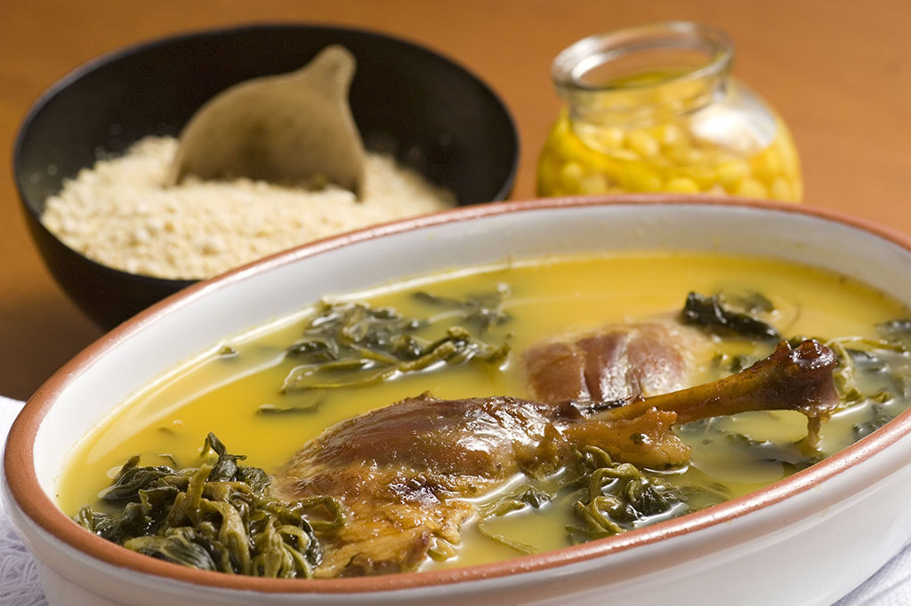

Home
Pato no tucupi

Description
Pato no Tucupi is a traditional masterpiece of Amazonian cuisine,
originating from the northern region of Brazil. This complex and intensely
flavorful dish features roasted or braised duck submerged in a vibrant,
yellow broth known as tucupi.
The foundation of this recipe relies on two unique regional ingredients.
Tucupi is an acidic, umami-rich sauce extracted from wild cassava
root, which undergoes a rigorous fermentation and boiling process. The
dish also prominently features jambu, a leafy green renowned for
producing a distinctive tingling and numbing sensation on the palate.
Historically reserved for major cultural celebrations and festive
occasions, such as the Círio de Nazaré, this recipe offers an
unparalleled sensory experience. It is a bold, sophisticated dish that
perfectly encapsulates the rich biodiversity and indigenous culinary
heritage of Brazil.
Ingredients (Yields: 10 servings)
- 1 large duck
- 2 liters of tucupi
- 2 bunches of jambu
- 1 cup chopped parsley and scallions (cheiro-verde)
- 1/2 cup chopped cilantro (optional)
- 3 gloves garlic, crushed
- 2 medium onions, chopped
- 1 bay leaf
- 2 tablespoons coarse salt
- Black pepper to taste
Steps
Prep Time: 3 hours
-
Clean and marinate the duck overnight using the seasoning ingredients.
- Discard any excess fat
-
The following day, place the duck in a greased roasting pan and cover
with aluminum foil. Bake in a preheated oven at Bake in a preheated oven
at 200ºC (400ºF) for 1 hour and 30 minutes, or until tender.
-
Remove from the oven, debone, and cut into medium-sized pieces. Drain
the fat, but reserve the pan drippings. Be mindful of the overall salt
content.
-
In a large pot, bring the 2 liters of tucupi to a boil. Add the duck
pieces and cook for 1 hour to reduce the broth and infuse the flavors.
- Taste the broth and adjust the salt if necessary.
-
Add the jambu, parsley, and scallions. Boil for an additional 30 minutes
until everything is thoroughly cooked, ensuring the meat does not
disintegrate.
- Serve with a high-quality butter farofa and the cooked giblets.